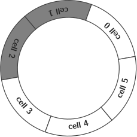

Communication latency (also called network delay and end-to-end delay) is the time that a chunk of data (a packet in the case of the Internet) takes to travel from one point of the network to another. This time is relevant for an intercom because the total latency \(t_u\) that an user experiments can be approximated by \begin {equation} t_u = t_p + t_i, \label {eq:user_latency} \end {equation} where \(t_p\) is the propagation time (or propagation latency) of the link and \(t_i\) is the latency generated by the intercom.
Due to the current design of the Internet [7, 6] (where the available bandwidth is shared on demand by the users of the network) \(t_p\) is time-variying, and cannot be controlled without using Quality of Service (QoS), something that is not available to normal network users [1]. On the contrary, \(t_i\) is constant for a given intercom’s configuration/implementation.
In this milestone we are going to measure the Quality of Experience (QoE) provided by our minimal intercom when the network latency varies at random. In this point, we have basically two alternatives:
Each option has pros and cons, from which we can highlight that:
In most cases we will test InterCom only in our host. Therefore, it can be useful to have an idea of how the latencies are distributed, at least, from a statistical point of view.
To mesasure latencies, we will use ping [4, 2], a tool that sends (one or more) ICMP Echo Request messages to an IP address and waits for receiving (one or more) ICMP Echo Reply messages generated by the (OS of that) host, measuring the so called RTT (Round-Trip Time). For example, in the Figure 1 are described the different time components in which a RTT can be decomposed. In this figure, \(t_t\) stands for transmission time, and \(t_p\) (again) for propagation time. A simple link (a cable, for example) using TDM (Time-Domain Multiplexing) has been supposed. For this reason, the propagation and transmission times are identical in both directions. Notice that if the payload of the ping message has only 64 bytes (the default value in most ping implementations) and the bit-rate of the link is high, then \(t_p\gg t_t.\) For this type of link (a simple wire), it also holds that \begin {equation} \text {RTT} = 2t_p + 2t_t. \label {eq:RTT} \end {equation}
Please, do the following steps:
Ping localhost:
ping localhost -c 100 -s <payload_length_in_bytes> > /tmp/ping.txt
Use a payload size compared to the chunk size that you expect to use in your InterCom experiments.
Find the histogram of the expected latencies:
cat << EOF | python -
import numpy as np
from scipy import stats
latencies = np.loadtxt("/tmp/localhost_latencies.txt")
average_latency = np.average(latencies)
print("\naverage latency =", average_latency)
max_latency = np.max(latencies)
min_latency = np.min(latencies)
maximum_absolute_deviation = max(max_latency - average_latency, average_latency - min_latency)
print("maximum absolute deviation (jitter) =", maximum_absolute_deviation)
correlation_coefficient = stats.pearsonr(latencies, np.roll(latencies, 1))[0]
print("Pearson correlation coefficient =", correlation_coefficient)
if correlation_coefficient < 0:
print("Correlation coefficient < 0: use 0 (no correlation between RTT samples) in your experiments")
histogram = np.histogram(latencies)
np.savetxt("/tmp/localhost_histogram.txt", histogram[0])
EOF
Plot the histogram:
gnuplot
plot "/tmp/localhost_histogram.txt" with histogram
This scenario can be useful to test InterCom in your host but simulating a real connection between hosts in different local networks1. For doing that:
Repeat the previous experiment (the characterization of the latencies returned by the ping tool) but using your interlocutor’s <router_public_IP_address> instead of localhost. Call the generated file as /tmp/<router_public_IP_address>_latencies.txt. The IPv4 address of your router can be determined with:
curl ipecho.net/plain
Request to your interlocutor to ping its router from his/her private network, for example, using2:
ping -s <chunk_length_in_bytes> 192.168.1.1
and to send this data to you. Save this info in /tmp/<router_private_IP_address>_latencies.txt.
Supposing that the latencies are symmetric (the direction of the packes does
not affect to the latency) and that the overall network latency of the link
between you a your interlocutor is the sum of the latency from your host to the
router of your interlocutor added to the latency from your interlocutor’s
host to that router (remember to edit the next line to use the right
namefiles!):
paste /tmp/<router_public_IP_address>_latencies.txt
/tmp/<router_private_IP_address>_latencies.txt | awk '{print
$1+$2}' > /tmp/add.txt
and as in the previous experiment, find a characterization for the full link from the data in /tmp/add.txt: average (arithmetic mean) latency, jitter, Pearson correlation coefficient, and probability distribution.
Let’s measure the QoE using the following classification:
Simply quantify your QoE when you run InterCom in your host without any traffic control.
Quantify your QoE when you run InterCom in two different hosts that are connected to different3 local networks, without any traffic control.
Check the current configuration:
tc qdisc show dev lo
The output should be something like:
qdisc noqueue 0: root refcnt 2
Using the characterization of the Internet link previously obtained, use the command tc to simulate this link locally using netem:
sudo tc qdisc add dev lo root netem delay <average_delay_in_miliseconds>ms <maximum_average_deviation_in_miliseconds>ms <Pearson_correlation_coefficient_expressed_as_a_percentage>% distribution <uniform|normal|pareto|paretonormal>
where:
qdisc:
Use the default FIFO Queueing DISCipline for the outgoing traffic.
add:
Add a new traffic control rule.
dev lo:
The device affected by the rule. lo means loopback.
root:
The rule will be applied to all the outbound traffic (it’s the root rule of the possible tree of rules).
netem:
Use the network emulator to emulate a WAN property.
Example:
Delete the tc rule with:
sudo tc qdisc delete dev lo root netem delay <average_dalay_in_miliseconds>ms <maximum_average_deviation_in_miliseconds>ms <Pearson_correlation_coefficient_expressed_as_a_percentage>% distribution <uniform|normal|pareto|paretonormal>
(Optional) It’s possible to change a working rule with:
sudo tc qdisc change dev lo root netem delay <average_dalay_in_miliseconds>ms <maximum_average_deviation_in_miliseconds>ms <Pearson_correlation_coefficient_expressed_as_a_percentage>% distribution <uniform|normal|pareto|paretonormal>
For our application, InterCom, a chunk is lost when it arrives too late or it never arrives. Therefore, the results of a packet loss or a packet delay are almost indistinguishable, except by the average latency experimented by the user (the higher the network latency, the higher the perceived latency).
For example, a packet loss ratio of \(10\%\) can be configured with tc by running:
sudo tc qdisc add dev lo root netem loss 10%
As exmplained before, we can consider that the QoE provided by InterCom is inversely proportional to the network jitter (see Fig. 2-a). One solution (see Fig. 2-b) to this drawback is the use of a random access buffer at the receiver side, where the chunks are stored for a time large enough to hidde the jitter to the user [4].
Dejitterizing buffers are typically implemented with a circular buffer structure (see Fig. 3). In an ideal situation (as the depicted in the figure), the number of pending-to-be-played chunks available in the buffer is half of the number of cells in the buffer, and the chunks have arrived on time. In this example, the receiver (where the chunks are buffered) waits for 3 chunks before to start playing the chunk number 0.4 Notice that the number of cells in the buffer \(2N\) must double the number of the chunks buffered during the buffering time proportional to \(N\), in order to hide a \(N\) chunk-times jitter. Notice also that this technique introduces also a \(N\) chunk-times delay in the playback.
 |  |  |
| (a) | (b) | (c) |
For this new improved InterCom a parameter with the buffering time must be provided by the users. This value (typically expressed in miliseconds) should be large enough to hide the network jitter, but small enough to minimize the end-to-end (user) latency.
The following guidelines have been used to implement the buffered version of InterCom:
It has been taken into consideration that the critical part of InterCom (the method record_send_and_play()) is a method that runs as an interrup handler that could be called each time a new chunk is available in the ADC (see the previuous milestone). More precisely:
This is an overview of the implementation:
# Interruption handler
def record_send_and_play():
chunk = record() # (1)
packed_chunk = pack(chunk) # (2)
send(packed_chunk) # (3)
chunk = unbuffer_next_chunk() # (4)
play(chunk) # (5)
# (Main, not a new) thread
def receive_and_buffer():
packed_chunk = receive() # (1)
chunk_number, chunk = unpack(packed_chunk) # (2)
buffer(chunk_number, chunk) # (3)
Notice that the Step (4) of the method record_send_and_play() extractcs from the buffer an unpacked5 chunk. The chunks are buffered in the Step (3) of the method receive_and_buffer(). Notice also that the Step (1) of receive_and_buffer() is a blocking method that will return with every new received chunk.
buffer.py can be run to inter-communicate two users (one user in the case of a simulation), and the buffering time can be controlled with the --buffering_time parameter. Using a real o simulated environment, find the minimum buffering time that allows to hide the jitter in your environment. In the case of using a simulated one, test different jitter configurations (value, correlation, and distribution).
The results of the experiments proposed in the Section 2 and the Section 3.1.
[1] Peter L. Dordal. An Introduction to Computer Networks. Dordal, Peter L., 2020.
[2] Behrouz Forouzan. Introduction to Data Communications and Networking. McGraw-Hill, 2007.
[3] Bert Hubert, Thomas Graf, Greg Maxwell, Remco van Mook, Martijn van Oosterhout, Paul B. Schroeder, Jasper Spaans, and Pedro Larroy. Linux Advanced Routing & Traffic Control. Publisher: Bert Humbert et al., 2012.
[4] James F. Kurose and Keith W. Ross. Computer Networking: A Top-Down Approach Featuring the Internet. Pearson, 2013.
[5] P. Srisuresh and M. Holdrege. IP Network Address Translator (NAT) Terminology and Considerations. 1999.
[6] William Stallings. Data and Computer Communications. Pearson/Prentice Hall, 2007.
[7] Andrew S. Tanenbaum. Computer Networks. Prentice Hall, 2011.
1If you are unable to use two different local networks, try to run InterCom in two hosts connected to the same router.
2Notice that the private IP addres of your router could be different.
3If you are unable to use two different local networks, try to run InterCom in two hosts connected to the same router.
4Implementation tip: in a system where for each recorded chunk a chunk must be also played, a delay in the playback can be generated by sending zero-chunks to the DAC and then, after the delay, start sending the received chunk of audio, in the right order.
5Chunks will be compressed in a posterior milestone, and uncompressing is performed in this step.